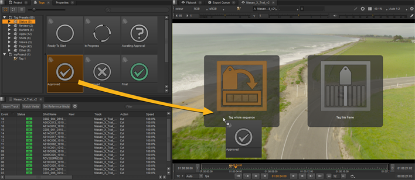
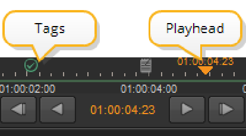
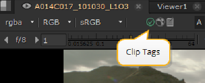

要使用查看器应用标记:
| 1。 | 单击 标签 标签，或导航到 窗口 > 标签 . |
的 标签 面板显示。
| 2. | 从中拖放所需的标记 标签 面板到观众。 |

根据您查看的是剪辑还是序列，将标签放在 标记此框架 , 标记整个剪辑 ,或 标记整个序列 根据需要。
应用于帧的标记显示在查看器帧滑块中的播放工具上方。

提示: 你可以使用 Alt 转变 , (逗号) 或 . (句点) 跳到当前剪辑上的上一个或下一个标记。您也可以通过沿查看器时间线拖动标记来重新定位标记。
应用于剪辑的标记显示在查看器上方。

|
|